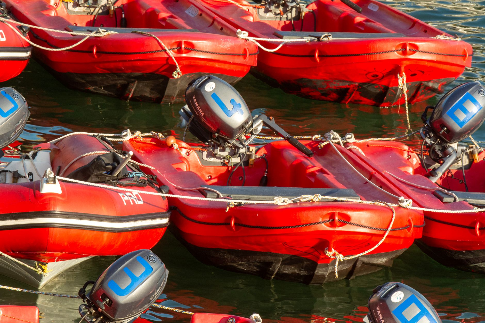

The shift to mega-dinghies
Recent reports from the English Channel indicate a significant shift in the operational methods used by organized crime syndicates. For years, the primary method of crossing involved a large number of small, relatively inexpensive inflatable boats. However, as law enforcement agencies have increased their surveillance and intercepted more of these small vessels, the smugglers have responded with a change in scale.
These new vessels, being referred to as mega-dinghies, are significantly larger than the standard inflatables previously seen. By using much larger boats, smuggling gangs can transport a higher volume of people in a single trip, which helps them mitigate the financial losses incurred when individual small boats are intercepted by border patrols. This move represents a calculated response to the increasing effectiveness of current crackdown measures.
Why small boat supplies are limited
The transition to larger vessels is not a choice made for comfort, but a necessity driven by supply chain disruptions. Authorities have successfully targeted the procurement networks that provide small boats, engines, and life jackets to criminal organizations. This crackdown has made it increasingly difficult and expensive for gangs to source the high volume of small craft required for their traditional business model.
Because the supply of small boats has been squeezed, the criminal economy is moving toward a high-risk, high-reward model. Instead of many small, frequent crossings, the gangs are betting on fewer, much larger, and more dangerous crossings that attempt to overwhelm the capacity of rescue services and border security.
The dangers of increased vessel size
While the larger boats might seem like a more efficient way to move people, they present catastrophic risks to the lives of those on board. The engineering of these mega-dinghies is often substandard, and they are frequently overloaded far beyond their safe capacity to maximize profit margins for the smugglers.
The sheer scale of these new vessels increases the potential for mass-casualty events if a single boat begins to take on water or loses power in heavy seas.
In the unpredictable waters of the English Channel, stability is everything. A large inflatable boat is highly susceptible to wind and waves, and if the weight distribution is incorrect due to overcrowding, the vessel can capsize in seconds. The shift to mega-dinghies essentially turns a dangerous situation into a potential maritime disaster on a much larger scale.
Law enforcement response and challenges
Border security agencies are currently facing a new set of technical challenges. While detecting a small boat is relatively straightforward with modern radar and visual surveillance, larger vessels can sometimes blend into commercial maritime traffic more easily if they are not careful. However, the increased capacity of these boats also makes them more obvious targets for thermal imaging once they are detected.
The challenge for authorities is not just detection, but the interception and rescue process. A single mega-dinghy may require multiple heavy-duty rescue vessels to manage the situation safely, stretching the resources of coastguards and naval patrols. This creates a tactical dilemma: how to intercept a vessel without causing the very catastrophe the authorities are trying to prevent.
Political implications and the path forward
The evolution of smuggling tactics keeps the issue at the forefront of political debate. As the methods change, so too must the policy responses. Governments are under immense pressure to demonstrate that their border security measures are effective, even as criminal organizations demonstrate their ability to adapt to new technologies and enforcement strategies.
The conversation surrounding border control often spills over into broader political scrutiny regarding leadership and accountability. As the public demands answers about the effectiveness of current policies, political figures often find themselves in the crosshairs of intense parliamentary questioning. For a deeper look at how political leaders handle high-pressure scrutiny in the UK, you might find our analysis of Will Burnham Face PMQs Pressure Like Tony Blair Did? particularly insightful as we explore the parallels in political accountability.
See Also
If you enjoyed this Current Events article, check out Will Burnham Face PMQs Pressure Like Tony Blair Did? for more useful reading.